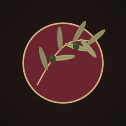
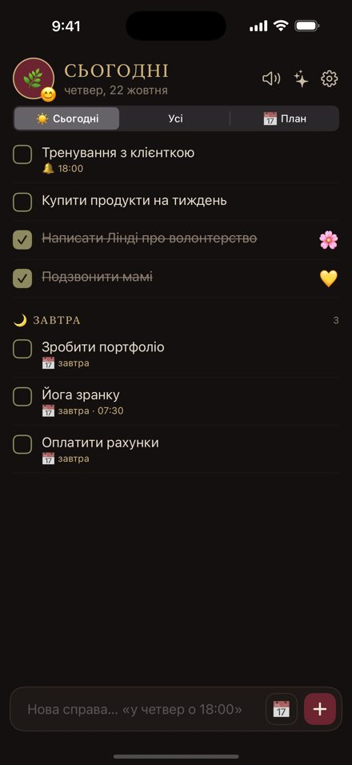
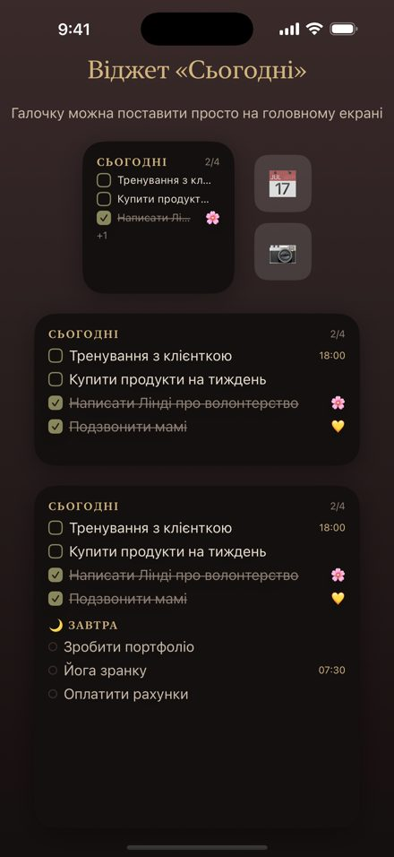
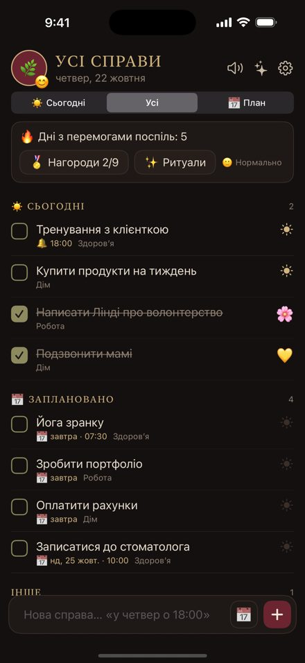

Затишок
Спокійний нотатник справ · iPhone, iPad, Mac
Пиши як подрузі — «у четвер о 18:00 тренування» — і Затишок сам розкладе справи по днях. Без червоного «прострочено», без тиску.
Завантажити в App Storeнезабаром


Розуміє звичайні слова
«Завтра о 10», «25 жовтня», «через 3 дні», «наступного тижня» — дата й час ставляться самі.
Ніжний перенос
Не встигла — справа спокійно переходить на завтра. Енергія дня підкаже, скільки взяти.
Віджети й Siri
Галочка прямо на головному екрані. На Mac — картка в рядку меню.
ШІ-помічник
Підключи свій ключ Claude або ChatGPT — і просто розповідай, що треба зробити.
Ритуали й нагороди
Ранок, Вечір, Огляд тижня. Серії днів без штрафів, смайлики й конфеті.
Дані тільки твої
На твоїх пристроях і у твоєму iCloud. Без реклами й аналітики.